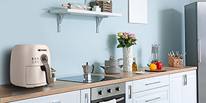
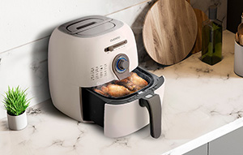
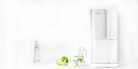
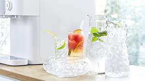

크로스컷 블렌더는 원액기와 블렌더의 장점을 모두 갖췄습니다. 양방향 분쇄를 통해 잔여물 없이 작은 입자 단위로 블렌딩 되어,
원액기에서 맛 볼 수 있는 부드러운 식감을 그대로 느낄 수 있습니다. 과일, 야채 등의 부드러운 재료만을 사용 가능한 원액기와 달리 단단한 재료도 제한 없이 블렌딩 가능해 활용도가 높습니다.

쿠쿠 에어프라이어
감성적인 레트로 디자인으로 어디에나 어울리며, 주방 인테리어에 알맞은 디자인입니다.

최대 200도 고온의 공기를 만들어 빠르고 맛있는 조리가 가능한 고화역 열풍 가열 방식이며, 2중 벽으로 열 손실을 줄여줍니다. 바스켓과 트레이를 분리하여 사이사이 깨끗한 세척이 가능하며 조리가 끝난 후 음식물이 늘러붙지 않습니다. 손잡이 구조로 되어있어 한 손으로 쉽개 들어 올려 이동이 편리합니다.

인 앤 아웃 아이스 10's
물 속 기포를 제거하는 웨이브 제빙 시스템으로 얼음 생성 시 보다 단단한 얼음을 생성합니다.

타사 대비 가장 믾은 1일 최대 제빙량을 자랑하는 제품으로, 하루에 아이스 커피 약 96잔의 얼음량을 만들어냅니다. 원할 때마다 바로 직수관, 냉수관 코크는 물론 얼음 토출구까지 인앤아웃으로 자동살균합니다. 방문 관리 없이 손쉽게 10초 간편 원터치 필터 교체가 가능합니다.